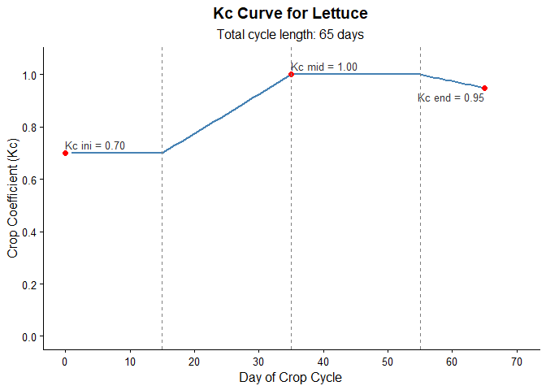

The irritool package provides computational tools in R for irrigation.
Installation
You can install the development version of irritool from GitHub with:
# install.packages("devtools")
devtools::install_github("joaobtj/irritool")Main Features
-
extract_brdwgd_point(): Extracts time series of meteorological variables (precipitation, ETo, temperatures, radiation, etc.) for specific coordinates from the BR-DWGD gridded database NetCDF files (Xavier et al.). -
calc_kc_curve(): Builds the daily crop coefficient (Kc) time series based on the four development stages of the FAO-56 methodology, returning the numeric values and a ready-to-useggplot2chart. -
calc_water_balance(): Calculates the daily soil water balance for the crop, estimating actual evapotranspiration (ETc), water deficit, irrigation requirements, and water surplus (deep percolation/runoff).
Example Usage
Below is a basic workflow showing how the package functions integrate to simulate a crop cycle.
library(irritool)
# 1. Obtain climate data for a coordinate (requires local NetCDF files)
# As this is a reproducible example, we leave the extraction commented out:
# climate_data <- extract_brdwgd_point(
# target_longitude = -50.59,
# target_latitude = -27.28,
# weather_variables = c("pr", "ETo"),
# nc_files_directory = "path/to/files"
# )
# For this example, we will use mock climate data:
cycle_days <- 65
set.seed(123)
rain_data <- sample(c(rep(0, 60), runif(5, 5, 25)))
eto_data <- runif(cycle_days, 3, 5)
# 2. Generate the Kc curve for the crop (e.g., Lettuce)
lettuce_kc <- calc_kc_curve(
kc_points = c(0.7, 1.0, 0.95),
stage_lengths = c(15, 20, 20, 10),
crop = "Lettuce"
)
# View the generated plot
print(lettuce_kc$kc_plot)
# 3. Simulate the soil water balance
water_balance <- calc_water_balance(
et0 = eto_data,
rainfall = rain_data,
daily_kc_values = lettuce_kc$kc_serie, # Consuming the output from the previous function
root_depth = 300,
theta_fc = 0.30,
theta_wp = 0.15,
depletion_factor = 0.55,
irrigation_rule = "threshold"
)
# View the first few days of the soil water balance
head(water_balance$water_balance_data)
#> day rainfall et0 root_depth taw raw depletion_start kc ks etc
#> 1 1 0 4.564589 300 45 24.75 0.000000 0.7 1 3.195212
#> 2 2 0 3.187190 300 45 24.75 3.195212 0.7 1 2.231033
#> 3 3 0 3.933558 300 45 24.75 5.426245 0.7 1 2.753491
#> 4 4 0 4.023011 300 45 24.75 8.179736 0.7 1 2.816108
#> 5 5 0 4.199978 300 45 24.75 10.995843 0.7 1 2.939985
#> 6 6 0 3.665647 300 45 24.75 13.935828 0.7 1 2.565953
#> depletion_end irrigation_applied water_surplus
#> 1 3.195212 0 0
#> 2 5.426245 0 0
#> 3 8.179736 0 0
#> 4 10.995843 0 0
#> 5 13.935828 0 0
#> 6 16.501781 0 0
# View the summary depths (totals)
print(water_balance$summary_depths)
#> $total_rainfall
#> [1] 91.16689
#>
#> $total_water_surplus
#> [1] 35.75595
#>
#> $net_rainfall
#> [1] 55.41094
#>
#> $total_etc
#> [1] 228.1546
#>
#> $total_irrigation_applied
#> [1] 158.6104
#>
#> $irrigation_events_count
#> [1] 6References
- Allen, R. G., Pereira, L. S., Raes, D., & Smith, M. (1998). Crop evapotranspiration - Guidelines for computing crop water requirements. FAO Irrigation and drainage paper 56.
- Xavier, A. C., King, C. W., & Scanlon, B. R. (2016). Daily gridded meteorological variables in Brazil (1980–2013). International Journal of Climatology.